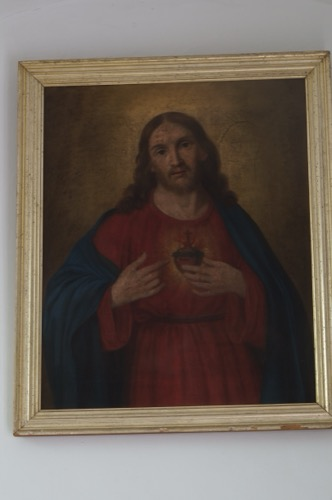
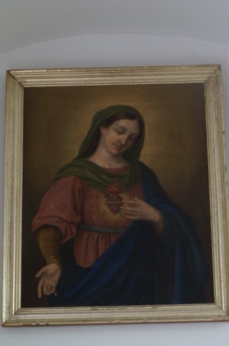
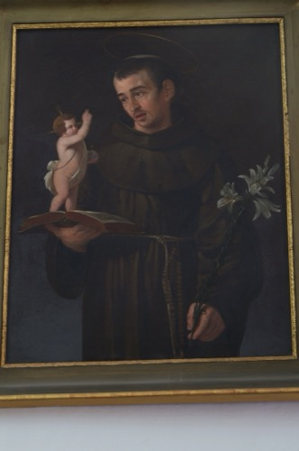
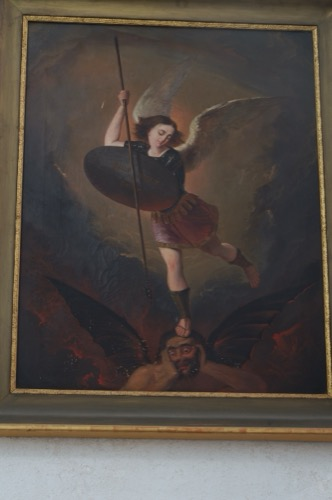
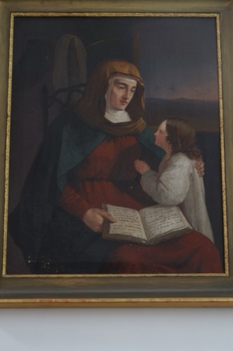
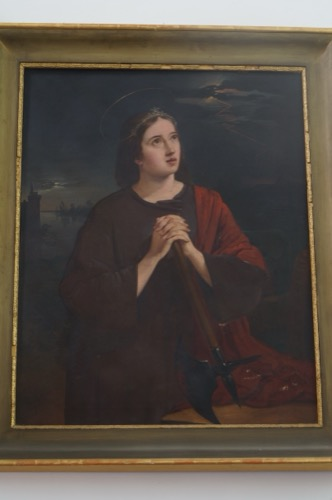

Sagrat Cor de Jesús
Toca per veure la fitxa

Immaculat Cor de Maria
Toca per veure la fitxa

Sant Antoni de Pàdua
Toca per veure la fitxa

Sant Miquel
Toca per veure la fitxa

Santa Aina
Toca per veure la fitxa

Santa Bàrbara
Toca per veure la fitxa